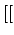
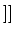
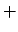

CI066 - Oficina de Programação
Notas de Aula # 08
1º semestre 2006
Prof. Armando Luiz N. Delgado
Uma EXPRESSÃO REGULAR é uma forma compacta de especificar um padrão
genérico de caracteres. Existem muitos filtros em UNIX, tais como
grep(1), sed(1), awk(1) e vi(1) que usam
tanto padrões exatos quanto expressões regulares.
Por exemplo, pode-se usar grep(1) para encontrar em um arquivo
por todas as linhas que tenham a letra ``H'', seguida de um número
qualquer de letras minúsculas, seguida da letra ``m''.
EXPRESSÕES REGULARES são parte integrante de sistemas UNIX e é
EXTREMAMENTE IMPORTANTE aprender como usá-las.
Dentro de uma expressão regular, certos símbolos tem um significado
especial, conforme mostrado na tabela 1. Mais
símbolos com siginificado especial podem ser encontrado na seção REGULAR
EXPRESSIONS no manual on-line de grep(1).
Tabela 1:
Sumário de símbolos usados em Expressões Regulares
| Símbolo |
Significado |
|---|
|
qualquer caracter simples, exceto quebra de linha (newline) |
|
zero ou mais ocorrências do caracter precedente |
| ^ |
início de uma linha |
| $ |
final de uma linha |
|
início de uma palavra |
|
final de uma palavra |
| |
um, e apenas um dos caracteres indicados pelos colchetes |
| ^ |
quaisquer caracteres que não estejam entre os indicados pelos colchetes |
 |
toma o caracter seguinte literalmente |
| :alnum: |
0-9A-Za-z |
| :alpha: |
A-Za-z |
| :digit: |
0-9 |
| a-d |
abcd |
| a-dP-T |
abcdPQRST |
| a^- |
um dos caracteres: a, ^, ], [ ou
-. O símbolo ^ perde seu significado especial se não está no
início da expressão entre colchetes. O símbolo - perde seu significado
especial se é o último caracter da expressão entre colchetes. O
símbolo ] perde seu significado se é o primeiro caracter
da expressão entre colchetes. |
|
egrep(1) é um outro comando bastante usado no processamento de
textos em UNIX.
egrep(1) é uma forma alternativa de grep(1) que utiliza
EXPRESSÕES REGULARES EXTENDIDAS (ERE's), em contraponto com EXPRESSÕES
REGULARES BÁSICAS (BRE's) usadas por grep(1).
Dentro de uma ERE, certos símbolos tem um significado especial,
conforme mostrado na tabela 2. Mais símbolos com
siginificado especial podem ser encontrados na seção REGULAR EXPRESSIONS
no manual on-line de grep(1)/egrep(1).
Tabela 2:
Sumário de símbolos usados em Expressões Regulares Extendidas
| Símbolo |
Significado |
|---|
|
zero ou mais ocorrências do elemento precedente |
|  |
um ou mais ocorrências do elemento precedente |
| ? |
elemento precedente é opcional, isto é, pode não ocorrer
ou ocorrer apenas uma vez |
| {n} |
o elemento precedente ocorre exatamente n vezes |
| {n,} |
o elemento precedente ocorre n ou mais vezes |
| {n,m} |
o elemento precedente ocorre no mínimo n vezes e no
máximo m vezes. |
| | |
combina 2 ERE's. A RE resultante é verdadeira para
qualquer string que corresponda a uma das
sub-expressões |
| ( ) |
agrupa RE's para forçar precedência entre operadores
ou para definir um elemento mais complexo que
um caracter, sobre o qual pode ser aplicado algum dos
operadores previamente definidos. |
|
Armando Luiz Nicolini Delgado
2003-11-10